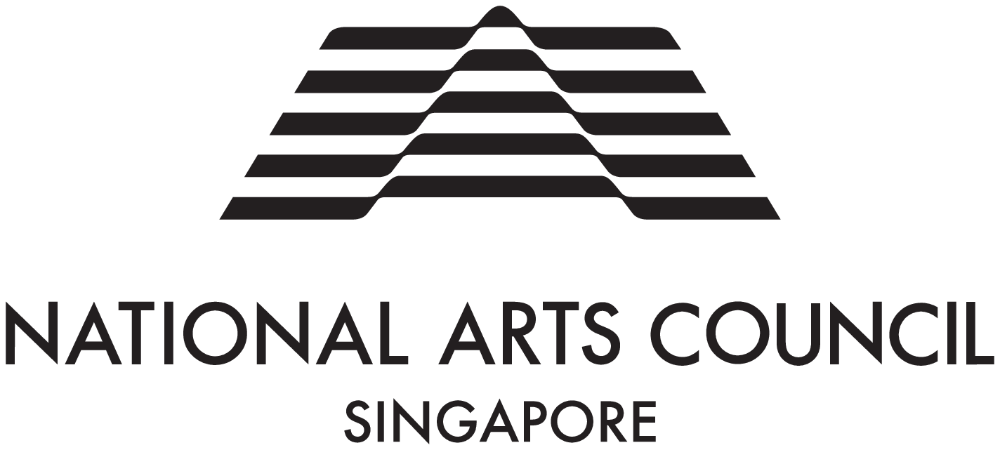

About
Process: Roving Ideas is a self-guided experience featuring a series of text-based instructions. Taking place all over Singapore, these site-specific instructions serve as prompts for participants to discover a unique experience envisioned by each contributing artist. In doing so, the project aims to uncover the potential of different locations outside of traditional art spaces.
Stemming from a desire to connect more with our environments and to draw out inherent experiences often overlooked in our daily life, the format of the project is inspired by significant art movements such as Fluxus, instructional and conceptual art, environmental art, and relational art. Through its execution, the project also strives to introduce different forms of art appreciation, foster a regular appreciation of arts in our everyday life, and facilitate the creation of shared experiences among the community.
Titled with words that encapsulate the spirit of this project, Process: Roving Ideas is also an anagram of SingapoRediscovers. The project encourages the public to “discover Singapore with fresh eyes” and gain better awareness and appreciation of our surroundings through artistic encounters.
Audience participants are encouraged to document and share their own experiences via the project hashtags on Instagram and Facebook.
Project Team
Conceptualised and curated by
Goh Chun Aik
Goh Chun Aik is interested in the human mind and how we perceive the world. Through extended observations of what is visible and ruminating on what lies beneath, he strives to investigate our relationships with each other, with art, and with the world.
Produced by
Hong Shu-ying
Shu is an artist who also works in the art.
Shu believes it is crucial to develop platforms and ways of show-making that will allow artists to practise independently and closer to our audiences. She hopes to foster a more accessible and vibrant art scene in Singapore that spurs greater artistic diversity and sustainability. Her interests include public art activations in Singapore and art books.
Designed by
gideon-jamie
gideon-jamie is a two-people studio (Gideon Kong and Jamie Yeo) designing and producing books, publications, and objects in close relation to writing, publishing, teaching, and running a small space for exhibitions and workshops.
Copy Edited by
Berny Tan
Berny Tan (b. 1990, Singapore) is an artist, curator, and writer. Her interdisciplinary practice explores the tensions that arise when she applies systems to—and unearths systems in—her personal experiences. Tan’s strategies also reflect a fundamental interest in language as it is read, written, and spoken by her. As an independent curator, she has developed a practice built on principles of empathy, sensitivity, and close collaboration with artists.
